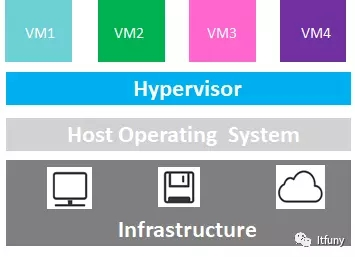
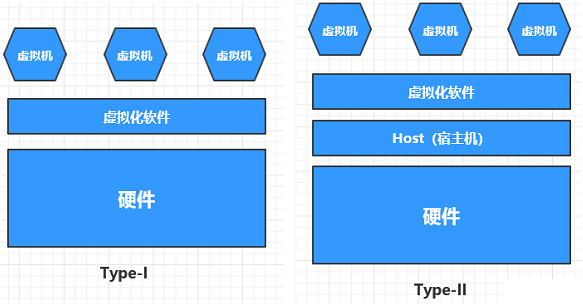
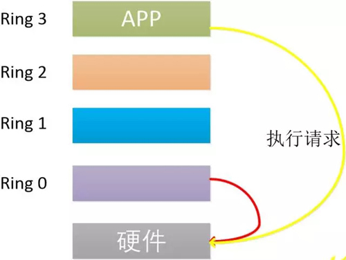
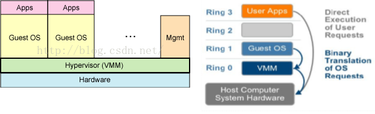
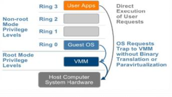
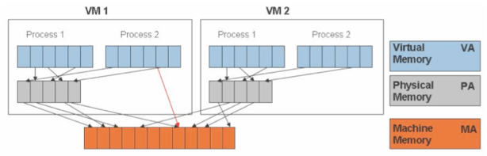
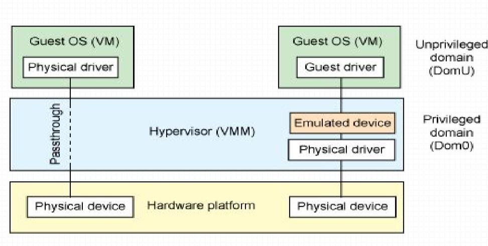

虚拟化
虚拟化（Virtualization）是一种资源管理技术，是将计算机的各种实体资源，如服务器、网络、内存及存储等，予以抽象、转换后呈现出来，打破实体结构间的不可切割的障碍，使用户可以比原本的组态更好的方式来应用这些资源
可以实现IT资源的动态分配、灵活调度、跨域共享，提高IT资源利用率，使IT资源能够真正成为社会基础设施，服务于各行各业中灵活多变的应用需
虚拟化和云计算的关系
虚拟化重点对资源的虚拟，比如把一台大型的服务器虚拟成多台小定的服务器。一个侧重虚拟的这种技术。
云计算的重点是对资源池（可以是经过虚拟化之后）进行统一的管理和调度。一种侧重对虚拟化之后的资源进行管理和调度。
虚拟化架构

虚拟化技术有很多，但是虚拟化架构主要有两种形式：裸金属架构和宿主架构：

Type-I:虚拟机直接运行在系统硬件上，创建硬件全仿真实例，被称为“裸机”,也称为裸金属架构。
xen,vmware ESX/ESXi
Type-II:虚拟机运行在传统操作系统上，同样创建的是硬件全仿真实例，被称为“托管”hypervisor。也称为宿主架构
kvm,vmware workstation,virtualbox
几个重要的概念：
A.宿主机：Host ，即物理服务器
B.虚拟机：Guest ，也称客户机、虚机
C.VMM（virtual Machine Monitor）：即Hypervisors，它是一种运行在基础物理服务器和操作系统之间的中间软件层,可允许多个操作系统和应用共享硬件。Hypervisors是一种在虚拟环境中的“元”操作系统。他们可以访问服务器上包括磁盘和内存在内的所有物理设备。Hypervisor不但协调着这些硬件资源的访问，也同时在各个虚拟机之间施加防护。当服务器启动并执行Hypervisor时，它会加载所有虚拟机客户端的操作系统同时会分配给每一台虚拟机适量的内存、CPU、网络和磁盘。
cpu虚拟化
CPU的运行级别，Ring 0也称为核心态，操作系统需要直接访问硬件和内存，使用特权指令，控制中断、修改页表、访问设备，因此它的代码需要运行在最高运行级别。Ring 3也称为用户态，需要访问磁盘、写文件时，则需要调用系统函数，这样的操作称为用户态到核心态。

Ring 是指 CPU 的运行级别，Ring 0是最高级别，Ring1次之，Ring2更次之
因为宿主操作系统是工作在 ring0 的，客户操作系统就不能也在 ring0 了，但是它不知道这一点，以前执行什么指令，现在还是执行什么指令，但是没有执行权限是会出错的。所以这时候虚拟机管理程序（VMM）需要避免这件事情发生。 虚机怎么通过 VMM 实现 Guest CPU 对硬件的访问，根据其原理不同有三种实现技术：
1. 全虚拟化
2. 半虚拟化
3. 硬件辅助的虚拟化
上层架构和底层要保持一致
模拟：Emulation
上层的虚拟机架构和底层可以不一样，性能比较差
著名的模拟器 PearPC,Bochs,QEMU
完全虚拟化（Full Virtualization)
宿主机完全虚拟出一个完整的平台，guest不需要任何修改,guest不清楚自己运行在虚拟环境中；
只需要模拟环0，假设各guest的内核运行在环1（实际上不可能运行在环1，因为环1没有特权指令）
软件模拟特权指令：例如VMM捕获关机指令，关闭虚拟机程，而非物理机
Hypervisor(VMM)在guest操作系统和裸硬件之间用于工作协调
BT：二进制翻译（软件）

VMware Workstation,VMware Server,VirtuaBox，Parallels Desktop
半虚拟化Para Virtualization）
操作系统辅助的虚拟化，也即半虚拟化(paravirtualization)或准虚拟化
它使用Hypervisor分享存取底层的硬件，但是它的guest操作系统集成了虚拟化方面的代码，guest OS能配合Hypervisor来协作实现虚拟化。（guest操作系统意识到自己是处于虚拟化环境）（Xen）
优点：与全虚拟化相比，架构更精简，整体速度会有一定优势。
缺点：要修改包含该API的操作系统，但是对于某些不含该API的操作系统（主要是windows）来说，就不行能用这种方法
Xen
硬件辅助的全虚拟化 (Hardware Assisted Virtualization)
HVM：硬件辅助的虚拟化（硬件），模拟出环-1，host的内核运行在环-1，guest内核运行在环0上，此时环0上没有特权指令，guest运行特权时指令cpu会被触发，这个过程不需要hyper进行监控，提高性能
CPU厂商Intel 和 AMD 开始支持虚拟化了。
CPU: ring -1
Intel：intel vt-x
AMD:amd-v

Intel-VT （Virtualization Technology）技术。 这种 CPU，这种 CPU，有 VMX root operation 和 VMX non-root operation两种模式，两种模式都支持Ring 0 ~ Ring 3 共 4 个运行级别。这样，VMM 可以运行在 VMX root operation模式下，客户 OS 运行在VMX non-root operation模式下。
内存虚拟化
进程视角看内存：线性地址空间 虚拟地址
内核视角看内存：物理地址空间
MMU将线性地址转化为物理地址
1.MMU：memory management unit，称为内存管理单元，或者是存储器管理单元，
MMU是硬件设备,MMU的主要作用是负责从CPU内核发出的虚拟地址到物理地址的映射，并提供硬件机制的内存访问权限检查
2.TLB:Translation Lookaside Buffer
可以把它理解成页表缓冲。里面存放的是一些页表文件（虚拟地址到物理地址的转换表）
TLB就是负责将虚拟内存地址翻译成实际的物理内存地址，而CPU寻址时会优先在TLB中进行寻址。处理器的性能就和寻址的命中率有很大的关系
在有两个虚机的情况下，情形是这样的

KVM为了在一台机器上运行多个虚拟机，需要增加一个新的内存虚拟化层，也就是说，必须虚拟MMU 来支持客户操作系统，来实现VA->PA->MA的翻译。客户操作系统继续控制虚拟地址到客户内存物理地址的映射 （VA -> PA），但是客户操作系统不能直接访问实际机器内存，因此VMM需要负责映射客户物理内存到实际机器内存（PA -> MA）
VMM 内存虚拟化的实现方式：
软件方式：通过软件实现内存地址的翻译，比如 Shadow page table （影子页表）技术
硬件实现：基于 CPU 的辅助虚拟化功能，比如 AMD的NPT和Intel的EPT技术
KVM中，虚机的物理内存即为qemu-kvm进程所占用的内存空间。KVM使用CPU辅助的内存虚拟化方式。在 Intel 和 AMD 平台，其内存虚拟化的实现方式分别为：
EPT和 NPT采用类似的原理，都是作为CPU中新的一层，用来将客户机的物理地址翻译为主机的物理地址
Intel和AMD分别通过EPT(Extended Page Tables)和NPT(Nested Page Tables)为虚拟化应用提升影子MMU的性能，并通过标记(tagged)TLB来 避免虚拟机切换时频繁清写(flush)TLB以提高TLB缓存的命中率
I/0虚拟化
I/0:
外存：
硬盘、光盘、u盘
网络设备：
网卡
显示设备：
VGA：frame buffer机制，
键盘鼠标：
ps/2,usb：完全模拟实现，当前焦点捕获，将虚拟设备和物理设备建立关联关系
I/O虚拟化的方式：
模拟：完全使用软件来模拟真实硬件
半虚拟化：KVM中，要想提高IO虚拟化的效率，就要使用半虚拟化的方式：virtio。
IO-through：IO透传，让虚拟机直接使用物理设备，几乎接近于硬件性能，硬件必须要 支持透传技术： Intel:VT-d 基于北桥的硬件辅助的虚拟化技术
虚拟和模拟：
虚拟：要求guest.kernel和host.kernel一致，用以提高性能
只需要捕获特权指令，其他非特权指令，直接在CPU上运行即可
模拟：可以不一致，需要进行翻译
需要捕获所有指令，翻译执行

虚拟化技术分类：
虚拟化技术的分类：
(1) 模拟：Emulation
Qemu, PearPC, Bochs, ...
(2) 完全虚拟化：Full Virtualization，Native Virtualization
BT/hvm
VMWare Workstation, VirtualBox, VMWare Server, Parallels Desktop, KVM(hvm), XEN(hvm)
(3) 半虚拟化：Para-Virutalization
特点：GuestOS明确知道自己运行虚拟机之上；
xen, UML(user-mode linux)
(4) 容器级虚拟化：
LXC, OpenVZ, libcontainer, runC, rkt, Linux V Servers, Virtuozzo, ...
(5) 库级别虚拟化：
wine
(6) 程序级虚拟化
jvm, pvm, ...